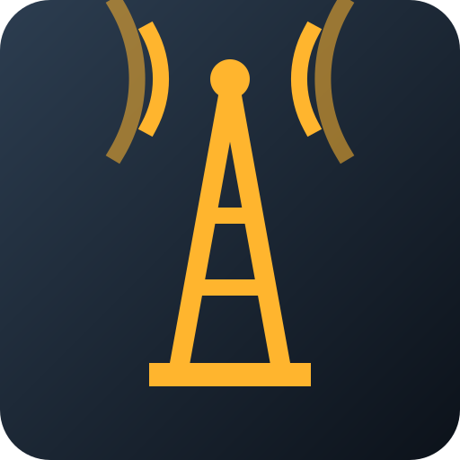

Vier Varianten auf demselben Grund: Bernstein auf blaugrauem Verlauf, kantige Formen, gezeichnet im Raster 512. Jede Variante steht in 180, 60, 32 und 16 Pixel und auf einem hellen und einem dunklen Startbildschirm neben neutralen Nachbarn. So zeigt sich, was bei kleinen Größen übrig bleibt.
Der Mast ist das einzige Bild, das beides zeigt, was die Leitstelle tut: Sie funkt, also verteilt Aufträge und sendet Signale, und sie empfängt, also Messwerte, Meldungen und Anmeldungen. Die Weiche zeigt nur das Verteilen, das Pult nur das Beobachten, und das Zielkreuz ist mehrdeutig, weil es ebenso gut Zielen oder Suchen bedeuten kann.
Dazu kommt der Mast mit wenigen Formen aus: ein Dreieck, ein Punkt, zwei Bögen. Bei 16 Pixel bleibt er als Spitze mit Fuß lesbar, während die drei Pfeile der Weiche und die drei Bildschirme des Pults zu einem Fleck verschwimmen und die Kerben des Zielkreuzes verschwinden. Der Mast ist deshalb Vorgabe; die anderen bleiben als Vergleich stehen.